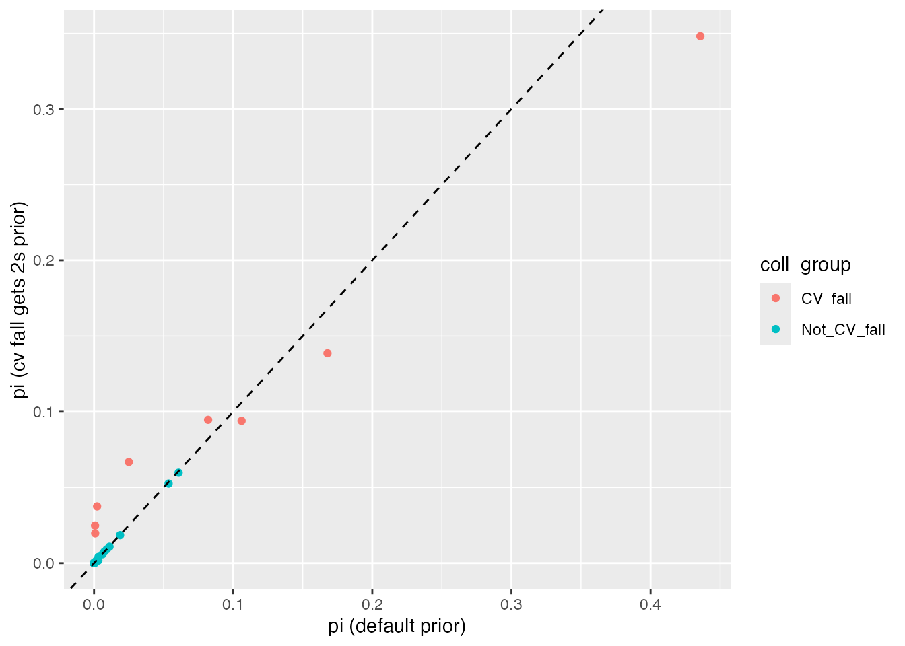
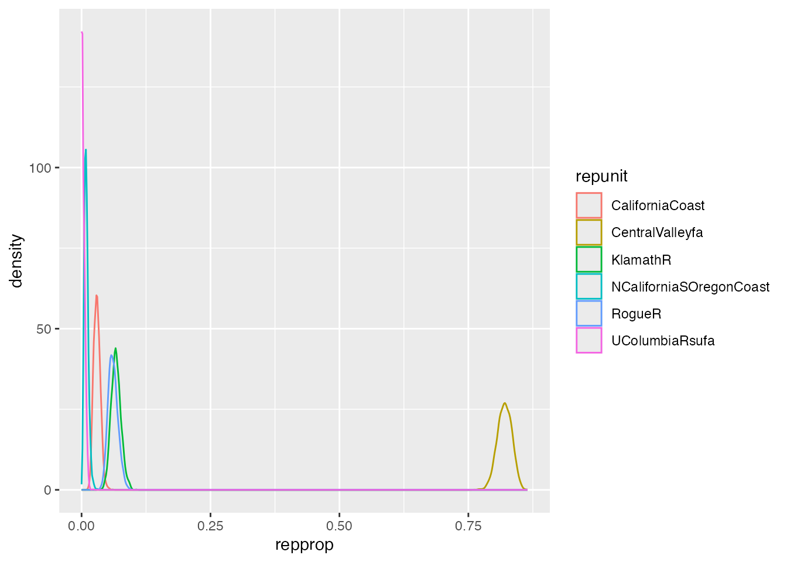
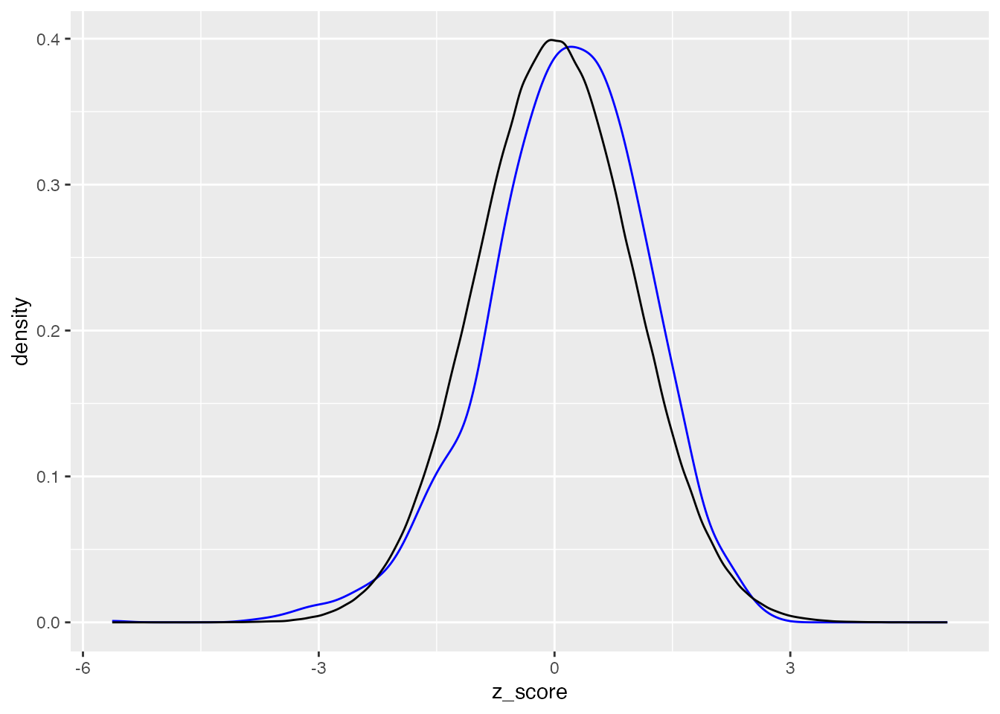
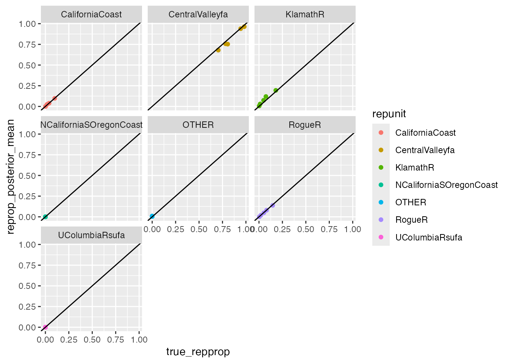
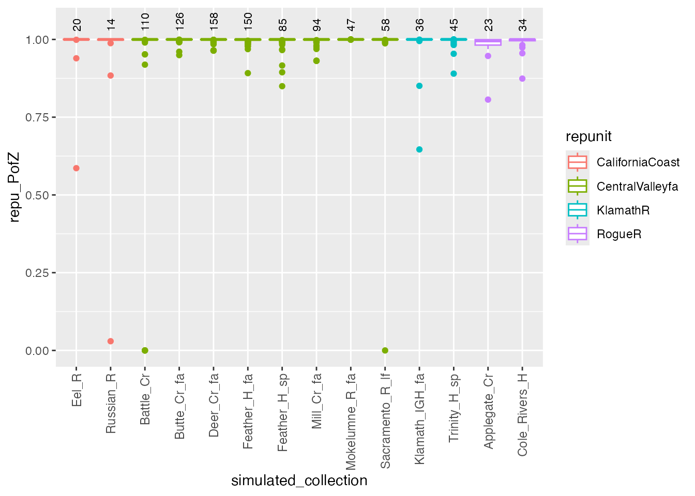
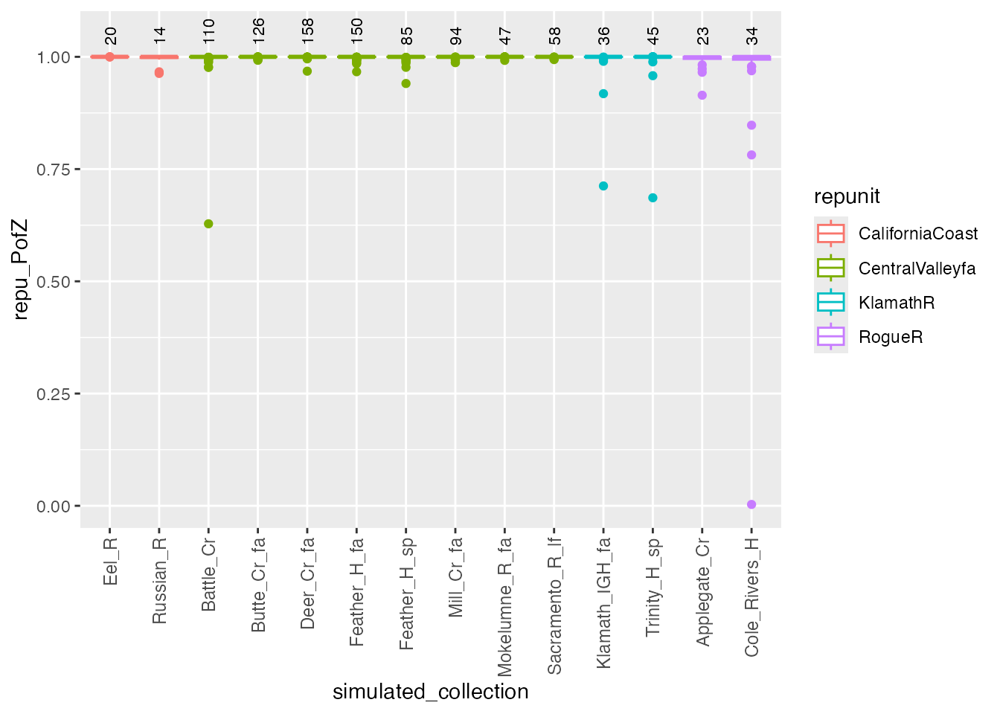

An Overview of rubias Usage
Eric C. Anderson
2025-10-16
Source:vignettes/rubias-overview.Rmd
rubias-overview.RmdThis is an R package for performing genetic stock identification (GSI) and associated tasks. Additionally, it includes a method designed to diagnose and correct a bias recently documented in genetic stock identification. The bias occurs when mixture proportion estimates are desired for groups of populations (reporting units) and the number of populations within each reporting unit are uneven.
Input Data
The functions for conducting genetic mixture analysis and for doing simulation assessment to predict the accuracy of a set of genetic markers for genetic stock identification require that genetic data be input as a data frame in a specific format:
- one row per individual
- each locus is represented by two adjacent columns, one for each allele (this package is only configured for diploids, at the moment). Allelic types can be expressed as any number or character
- missing data at a locus is expressed with NA values for each gene copy at the locus
- if one gene copy is missing from a locus in an indivividual, then both gene copies must be missing at the locus.
- the name of the locus is taken to be the column name of the first column of each pair of locus columns. The header on the second column is ignored.
- the data frame must have four columns of meta data for each
individual:
-
sample_type: a column telling whether the sample is areferencesample or amixturesample. -
repunit: the reporting unit that an individual/collection belongs to. This is required if sample_type isreference. And if sample_type ismixturethen repunit must beNA.
This must be a character vector. Not a factor. The idea of a “reporting unit” is well-known amongst people doing genetic stock identfication of salmon, but might not be familiar elsewhere. Briefly, a reporting unit is a group of populations (which we call “collections”) that are typically closely related genetically, and which will likely be aggregrated in the results of the GSI exercise. -
collection: for reference samples, the name of the population that the individual is from. For mixture samples, this is the name of the particular sample (i.e. stratum or port that is to be treated together in space and time). This must be a character, not a factor. -
indiva character vector with the ID of the fish. These must be unique.
-
- When we started developing
rubias, we intended to allow both therepunitand thecollectioncolumns to be either character vectors or factors. Having them as factors might be desirable if, for example, a certain sort order of the collections or repunits was desired. However at some point it became clear to Eric that, given our approach to converting all the data to a C++ data structure of integers, for rapid analyis, we would be exposing ourselves to greater opportunities for bugginess by allowingrepunitandcollectionto be factors. Accordingly, they must be character vectors. If they are not,rubiaswill throw an error. Note: if you do have a specific sort order for your collections or repunits, you can always change them into factors after analysis withrubias. Additionally, you can keep extra columns in your original data frame (for examplerepunit_forcollection_f) in which the repunits or the collections are stored as factors. See, for example the data filealewife. Or you can just keep a character vector that has the sort order you would like, so as to use it when changing things to factors afterrubiasanalysis. (See, for instance,chinook_repunit_levels.) - The file can have any number of other meta data columns; however, they must all occur in the data frame before the columns of genetic data.
- When you pass a data frame into any of these functions, you have to tell it which column the genetic data starts in, and it is assumed that all the columns after that one contain genetic data.
- If you are doing a mixture analysis, the data frame of mixture fish and of the reference fish must have the same column structure, i.e., they must have exactly the same number of columns with exactly the same column names, in the same order and of the same type.
How about haploid markers?
At the request of the good folks at ADFG, I introduced a few hacks to
allow the input to include markers that are haploid (for example mtDNA
haplotypes). To denote a marker as haploid you still give it two
columns of data in your data frame, but the second column of the
haploid marker must be entirely NAs. When rubias is
processing the data and it sees this, it assumes that the marker is
haploid and it treats it appropriately.
Note that if you have a diploid marker it typically does not make sense to mark one of the gene copies as missing and the other as non-missing. Accordingly, if you have a diploid marker that records just one of the gene copies as missing in any individual, it is going to throw an error. Likewise, if your haploid marker does not have every single individual with an NA at the second gene copy, then it’s also going to throw an error.
An example reference data file
Load our packages first:
library(rubias)
# all the following libraries can be loaded with "library(tidyverse)"
# but then you have to put tidyverse in the Suggests because this is
# in the vignette, and that is bad practice, so, load the packages separately...
library(tibble)
library(dplyr)##
## Attaching package: 'dplyr'## The following objects are masked from 'package:stats':
##
## filter, lag## The following objects are masked from 'package:base':
##
## intersect, setdiff, setequal, unionHere are the meta data columns and the first two loci for eight
individuals in the chinook reference data set that comes
with the package:
head(chinook[, 1:8])## # A tibble: 6 × 8
## sample_type repunit collection indiv Ots_94857.232 Ots_94857.232.1
## <chr> <chr> <chr> <chr> <int> <int>
## 1 reference CentralValleyfa Feather_H_sp Feathe… 2 2
## 2 reference CentralValleyfa Feather_H_sp Feathe… 2 4
## 3 reference CentralValleyfa Feather_H_sp Feathe… 2 4
## 4 reference CentralValleyfa Feather_H_sp Feathe… 2 4
## 5 reference CentralValleyfa Feather_H_sp Feathe… 2 2
## 6 reference CentralValleyfa Feather_H_sp Feathe… 2 4
## # ℹ 2 more variables: Ots_102213.210 <int>, Ots_102213.210.1 <int>An example mixture data file
Here is the same for the mixture data frame that goes along with that reference data set:
head(chinook_mix[, 1:8])## # A tibble: 6 × 8
## sample_type repunit collection indiv Ots_94857.232 Ots_94857.232.1
## <chr> <chr> <chr> <chr> <int> <int>
## 1 mixture NA rec2 T124711 4 2
## 2 mixture NA rec2 T124719 4 2
## 3 mixture NA rec2 T124727 4 4
## 4 mixture NA rec1 T124735 4 4
## 5 mixture NA rec1 T124743 2 2
## 6 mixture NA rec1 T124759 4 2
## # ℹ 2 more variables: Ots_102213.210 <int>, Ots_102213.210.1 <int>Preliminary good practice — check for duplicate individuals
Sometimes, for a variety of reasons, an individual’s genotype might
appear more than once in a data set. rubias has a quick and
dirty function to spot pairs of individuals that share a large number of
genotypes. Clearly you only want to look at pairs that don’t have a
whole lot of missing data, so one parameter is the fraction of loci that
are non-missing in either fish. In our experience with Fluidigm assays,
if a fish is missing at > 10% of the SNPs, the remaining genotypes
are likely to have a fairly high error rate. So, to look for matching
samples, let’s require 85% of the genotypes to be non-missing in both
members of the pair. The last parameter is the fraction of non-missing
loci at which the pair has the same genotype. We will set that to 0.94
first. Here we see it in action:
# combine small_chinook_ref and small_chinook_mix into one big data frame,
# but drop the California_Coho collection because Coho all
# have pretty much the same genotype at these loci!
small_chinook_all <- bind_rows(small_chinook_ref, small_chinook_mix) %>%
filter(collection != "California_Coho")
# then toss them into a function.
matchy_pairs <- close_matching_samples(D = small_chinook_all,
gen_start_col = 5,
min_frac_non_miss = 0.85,
min_frac_matching = 0.94
)## Summary Statistics:
##
## 1009 Individuals in Sample
##
## 91 Loci: AldB1.122, AldoB4.183, OTNAML12_1.SNP1, Ots_100884.287, Ots_101119.381, Ots_101704.143, Ots_102213.210, Ots_102414.395, Ots_102420.494, Ots_102457.132, Ots_102801.308, Ots_102867.609, Ots_103041.52, Ots_104063.132, Ots_104569.86, Ots_105105.613, Ots_105132.200, Ots_105401.325, Ots_105407.117, Ots_106499.70, Ots_106747.239, Ots_107074.284, Ots_107285.93, Ots_107806.821, Ots_108007.208, Ots_108390.329, Ots_108735.302, Ots_109693.392, Ots_110064.383, Ots_110201.363, Ots_110495.380, Ots_110551.64, Ots_111312.435, Ots_111666.408, Ots_111681.657, Ots_112301.43, Ots_112419.131, Ots_112820.284, Ots_112876.371, Ots_113242.216, Ots_113457.40, Ots_117043.255, Ots_117242.136, Ots_117432.409, Ots_118175.479, Ots_118205.61, Ots_118938.325, Ots_122414.56, Ots_123048.521, Ots_123921.111, Ots_124774.477, Ots_127236.62, Ots_128302.57, Ots_128693.461, Ots_128757.61, Ots_129144.472, Ots_129170.683, Ots_129458.451, Ots_130720.99, Ots_131460.584, Ots_131906.141, Ots_94857.232, Ots_96222.525, Ots_96500.180, Ots_97077.179, Ots_99550.204, Ots_ARNT.195, Ots_AsnRS.60, Ots_aspat.196, Ots_CD59.2, Ots_CD63, Ots_EP.529, Ots_GDH.81x, Ots_HSP90B.385, Ots_MHC1, Ots_mybp.85, Ots_myoD.364, Ots_Ots311.101x, Ots_PGK.54, Ots_Prl2, Ots_RFC2.558, Ots_SClkF2R2.135, Ots_SWS1op.182, Ots_TAPBP, Ots_u07.07.161, Ots_u07.49.290, Ots_u4.92, OTSBMP.2.SNP1, OTSTF1.SNP1, S71.336, unk_526
##
## 7 Reporting Units: CentralValleysp, CentralValleyfa, CentralValleywi, CaliforniaCoast, KlamathR, MidOregonCoast
##
## 6 Collections: Deer_Cr_sp, Feather_H_fa, Sacramento_H, Eel_R, Klamath_IGH_fa, Umpqua_sp
##
## 3.65% of allelic data identified as missing## # A tibble: 7 × 10
## num_non_miss num_match indiv_1 indiv_2 collection_1 collection_2 sample_type_1
## <int> <int> <chr> <chr> <chr> <chr> <chr>
## 1 91 90 Umpqua… Umpqua… Umpqua_sp Umpqua_sp reference
## 2 91 90 Umpqua… Umpqua… Umpqua_sp Umpqua_sp reference
## 3 91 89 Umpqua… Umpqua… Umpqua_sp Umpqua_sp reference
## 4 90 90 Umpqua… Umpqua… Umpqua_sp Umpqua_sp reference
## 5 90 89 Umpqua… Umpqua… Umpqua_sp Umpqua_sp reference
## 6 88 87 Umpqua… Umpqua… Umpqua_sp Umpqua_sp reference
## 7 78 74 Deer_C… Deer_C… Deer_Cr_sp Deer_Cr_sp reference
## # ℹ 3 more variables: repunit_1 <chr>, sample_type_2 <chr>, repunit_2 <chr>Check that out. This reveals 7 pairs in the data set that are likely duplicate samples.
If we reduce the min_frac_matching, we get more matches,
but these are very unlikely to be the same individual, unless genotyping
error rates are very high.
# then toss them into a function. This takes half a minute or so...
matchy_pairs2 <- close_matching_samples(D = small_chinook_all,
gen_start_col = 5,
min_frac_non_miss = 0.85,
min_frac_matching = 0.80
)## Summary Statistics:
##
## 1009 Individuals in Sample
##
## 91 Loci: AldB1.122, AldoB4.183, OTNAML12_1.SNP1, Ots_100884.287, Ots_101119.381, Ots_101704.143, Ots_102213.210, Ots_102414.395, Ots_102420.494, Ots_102457.132, Ots_102801.308, Ots_102867.609, Ots_103041.52, Ots_104063.132, Ots_104569.86, Ots_105105.613, Ots_105132.200, Ots_105401.325, Ots_105407.117, Ots_106499.70, Ots_106747.239, Ots_107074.284, Ots_107285.93, Ots_107806.821, Ots_108007.208, Ots_108390.329, Ots_108735.302, Ots_109693.392, Ots_110064.383, Ots_110201.363, Ots_110495.380, Ots_110551.64, Ots_111312.435, Ots_111666.408, Ots_111681.657, Ots_112301.43, Ots_112419.131, Ots_112820.284, Ots_112876.371, Ots_113242.216, Ots_113457.40, Ots_117043.255, Ots_117242.136, Ots_117432.409, Ots_118175.479, Ots_118205.61, Ots_118938.325, Ots_122414.56, Ots_123048.521, Ots_123921.111, Ots_124774.477, Ots_127236.62, Ots_128302.57, Ots_128693.461, Ots_128757.61, Ots_129144.472, Ots_129170.683, Ots_129458.451, Ots_130720.99, Ots_131460.584, Ots_131906.141, Ots_94857.232, Ots_96222.525, Ots_96500.180, Ots_97077.179, Ots_99550.204, Ots_ARNT.195, Ots_AsnRS.60, Ots_aspat.196, Ots_CD59.2, Ots_CD63, Ots_EP.529, Ots_GDH.81x, Ots_HSP90B.385, Ots_MHC1, Ots_mybp.85, Ots_myoD.364, Ots_Ots311.101x, Ots_PGK.54, Ots_Prl2, Ots_RFC2.558, Ots_SClkF2R2.135, Ots_SWS1op.182, Ots_TAPBP, Ots_u07.07.161, Ots_u07.49.290, Ots_u4.92, OTSBMP.2.SNP1, OTSTF1.SNP1, S71.336, unk_526
##
## 7 Reporting Units: CentralValleysp, CentralValleyfa, CentralValleywi, CaliforniaCoast, KlamathR, MidOregonCoast
##
## 6 Collections: Deer_Cr_sp, Feather_H_fa, Sacramento_H, Eel_R, Klamath_IGH_fa, Umpqua_sp
##
## 3.65% of allelic data identified as missing## # A tibble: 16 × 10
## num_non_miss num_match indiv_1 indiv_2 collection_1 collection_2
## <int> <int> <chr> <chr> <chr> <chr>
## 1 91 90 Umpqua_sp:0009 Umpqua_sp… Umpqua_sp Umpqua_sp
## 2 91 90 Umpqua_sp:0018 Umpqua_sp… Umpqua_sp Umpqua_sp
## 3 91 89 Umpqua_sp:0001 Umpqua_sp… Umpqua_sp Umpqua_sp
## 4 91 74 Sacramento_H:0076 Sacrament… Sacramento_H Sacramento_H
## 5 91 74 Sacramento_H:0096 Sacrament… Sacramento_H Sacramento_H
## 6 90 90 Umpqua_sp:0016 Umpqua_sp… Umpqua_sp Umpqua_sp
## 7 90 89 Umpqua_sp:0002 Umpqua_sp… Umpqua_sp Umpqua_sp
## 8 90 73 Sacramento_H:0063 Sacrament… Sacramento_H Sacramento_H
## 9 90 72 Sacramento_H:0061 Sacrament… Sacramento_H Sacramento_H
## 10 90 72 Sacramento_H:0081 Sacrament… Sacramento_H Sacramento_H
## 11 89 73 Sacramento_H:0196 Sacrament… Sacramento_H Sacramento_H
## 12 89 72 Sacramento_H:0041 Sacrament… Sacramento_H Sacramento_H
## 13 88 87 Umpqua_sp:0010 Umpqua_sp… Umpqua_sp Umpqua_sp
## 14 85 68 Sacramento_H:0060 Sacrament… Sacramento_H Sacramento_H
## 15 79 71 Deer_Cr_sp:0009 Deer_Cr_s… Deer_Cr_sp Deer_Cr_sp
## 16 78 74 Deer_Cr_sp:0021 Deer_Cr_s… Deer_Cr_sp Deer_Cr_sp
## # ℹ 4 more variables: sample_type_1 <chr>, repunit_1 <chr>,
## # sample_type_2 <chr>, repunit_2 <chr>A more principled approach would be to use the allele frequencies in each collection and take a likelihood based approach, but this is adequate for finding obvious duplicates.
How about known-origin individuals in the mixture?
In some cases, you might know (more or less unambiguously) the origin of some fish in a particular mixture sample. For example, if 10% of the individuals in a mixture carried coded wire tags, then you would want to include them in the sample, but make sure that their collections of origin were hard-coded to be what the CWTs said. Another scenario in which this might occur is when the genetic data were used for parentage-based tagging of the individuals in the mixture sample. In that case, some individuals might be placed with very high confidence to parents. Then, they should be included in the mixture as having come from a known collection. The folks at the DFO in Nanaimo, Canada are doing an amazing job with PBT and wondered if rubias could be modified to deal with the latter situation.
We’ve made some small additions to accommodate this. rubias does not
do any actual inference of parentage, but if you know the origin of some
fish in the mixture, that can be included in the rubias analysis. The
way you do this with the function infer_mixture() is to
include a column called known_collection in both the
reference data frame and the mixture data frame. In the reference data
frame, known_collection should just be a copy of the
collection column. However, in the mixture data frame each
entry in known_collection should be the collection that the
individual is known to be from (i.e. using parentage inference or a
CWT), or, if the individual is not known to be from any collection, it
should be NA. Note that the names of the collections in
known_collection must match those found in the
collection column in the reference data set.
These modifications are not allowed for the parametric bootstrap (PB)
and baseline resampling (BR) methods in
infer_mixture().
Performing a Genetic Mixture Analysis
This is done with the infer_mixture function. In the
example data chinook_mix our data consist of fish caught in
three different fisheries, rec1, rec2, and
rec3 as denoted in the collection column. Each of those
collections is treated as a separate sample, getting its own mixing
proportion estimate. This is how it is run with the default options:
mix_est <- infer_mixture(reference = chinook,
mixture = chinook_mix,
gen_start_col = 5)## Collating data; compiling reference allele frequencies, etc. time: 1.06 seconds
## Computing reference locus specific means and variances for computing mixture z-scores time: 0.10 seconds
## Working on mixture collection: rec2 with 772 individuals
## calculating log-likelihoods of the mixture individuals. time: 0.06 seconds
## performing 2000 total sweeps, 100 of which are burn-in and will not be used in computing averages in method "MCMC" time: 0.54 seconds
## tidying output into a tibble. time: 0.03 seconds
## Working on mixture collection: rec1 with 743 individuals
## calculating log-likelihoods of the mixture individuals. time: 0.06 seconds
## performing 2000 total sweeps, 100 of which are burn-in and will not be used in computing averages in method "MCMC" time: 0.52 seconds
## tidying output into a tibble. time: 0.03 seconds
## Working on mixture collection: rec3 with 741 individuals
## calculating log-likelihoods of the mixture individuals. time: 0.06 seconds
## performing 2000 total sweeps, 100 of which are burn-in and will not be used in computing averages in method "MCMC" time: 0.51 seconds
## tidying output into a tibble. time: 0.03 secondsThe result comes back as a list of four tidy data frames:
-
mixing_proportions: the mixing proportions. The columnpiholds the estimated mixing proportion for each collection. -
indiv_posteriors: this holds, for each individual, the posterior means of group membership in each collection. ColumnPofZholds those values. Columnlog_likelihoodholds the log of the probability of the individuals genotype given it is from the collection. Also included aren_non_miss_lociandn_miss_lociwhich are the number of observed loci and the number of missing loci at the individual. A list columnmissing_locicontains vectors with the indices (and the names) of the loci that are missing in that individual. It also includes a columnz_scorewhich can be used to diagnose fish that don’t belong to any samples in the reference data base (see below). -
mix_prop_traces:MCMC traces of the mixing proportions for each collection. You will use these if you want to make density estimates of the posterior distribution of the mixing proportions or if you want to compute credible intervals. -
bootstrapped_proportions: This is NULL in the above example, but if we had chosenmethod = "PB"then this would be a tibble of bootstrap-corrected reporting unit mixing proportions.
These data frames look like this:
lapply(mix_est, head)## $mixing_proportions
## # A tibble: 6 × 4
## mixture_collection repunit collection pi
## <chr> <chr> <chr> <dbl>
## 1 rec2 CentralValleyfa Feather_H_sp 0.0733
## 2 rec2 CentralValleysp Butte_Cr_Sp 0.0000312
## 3 rec2 CentralValleysp Mill_Cr_sp 0.0000338
## 4 rec2 CentralValleysp Deer_Cr_sp 0.0000646
## 5 rec2 CentralValleysp UpperSacramento_R_sp 0.000702
## 6 rec2 CentralValleyfa Feather_H_fa 0.157
##
## $indiv_posteriors
## # A tibble: 6 × 10
## mixture_collection indiv repunit collection PofZ log_likelihood z_score
## <chr> <chr> <chr> <chr> <dbl> <dbl> <dbl>
## 1 rec2 T124711 Central… Feather_H… 1.67e-28 -137. -13.1
## 2 rec2 T124711 Central… Feather_H… 1.03e-27 -136. -12.6
## 3 rec2 T124711 Central… Butte_Cr_… 1.55e-24 -130. -10.5
## 4 rec2 T124711 Central… Mill_Cr_fa 6.90e-30 -135. -11.8
## 5 rec2 T124711 Central… Deer_Cr_fa 2.09e-28 -134. -11.6
## 6 rec2 T124711 Central… Mokelumne… 1.86e-27 -134. -12.3
## # ℹ 3 more variables: n_non_miss_loci <int>, n_miss_loci <int>,
## # missing_loci <list>
##
## $mix_prop_traces
## # A tibble: 6 × 5
## mixture_collection sweep repunit collection pi
## <chr> <int> <chr> <chr> <dbl>
## 1 rec2 0 CentralValleyfa Feather_H_sp 0.0145
## 2 rec2 0 CentralValleysp Butte_Cr_Sp 0.0145
## 3 rec2 0 CentralValleysp Mill_Cr_sp 0.0145
## 4 rec2 0 CentralValleysp Deer_Cr_sp 0.0145
## 5 rec2 0 CentralValleysp UpperSacramento_R_sp 0.0145
## 6 rec2 0 CentralValleyfa Feather_H_fa 0.0145
##
## $bootstrapped_proportions
## # A tibble: 0 × 0Setting the prior for the mixing proportions
In some cases there might be a reason to explicitly set the
parameters of the Dirichlet prior on the mixing proportions of the
collections. For a contrived example, we could imagine that we wanted a
Dirichlet prior with all parameters equal to 1/(# of collections),
except for the parameters for all the Central Valley Fall Run
populations, to which we would like to assign Dirichlet parameters of 2.
That can be accomplished with the pi_prior argument to the
infer_mixture() function, which will let you pass in a
tibble in which one column named “collection” gives the collection, and
the other column, named “pi_param” gives the desired parameter.
Here we construct that kind of input:
prior_tibble <- chinook %>%
count(repunit, collection) %>%
filter(repunit == "CentralValleyfa") %>%
select(collection) %>%
mutate(pi_param = 2)
# see what it looks like:
prior_tibble## # A tibble: 8 × 2
## collection pi_param
## <chr> <dbl>
## 1 Battle_Cr 2
## 2 Butte_Cr_fa 2
## 3 Deer_Cr_fa 2
## 4 Feather_H_fa 2
## 5 Feather_H_sp 2
## 6 Mill_Cr_fa 2
## 7 Mokelumne_R_fa 2
## 8 Sacramento_R_lf 2Then we can run that in infer_mixture():
set.seed(12)
mix_est_with_prior <- infer_mixture(reference = chinook,
mixture = chinook_mix,
gen_start_col = 5,
pi_prior = prior_tibble)## Collating data; compiling reference allele frequencies, etc. time: 0.79 seconds
## Computing reference locus specific means and variances for computing mixture z-scores time: 0.10 seconds
## Working on mixture collection: rec2 with 772 individuals
## Joining with `by = join_by(collection)` calculating log-likelihoods of the mixture individuals. time: 0.06 seconds
## performing 2000 total sweeps, 100 of which are burn-in and will not be used in computing averages in method "MCMC" time: 0.54 seconds
## tidying output into a tibble. time: 0.03 seconds
## Working on mixture collection: rec1 with 743 individuals
## Joining with `by = join_by(collection)` calculating log-likelihoods of the mixture individuals. time: 0.06 seconds
## performing 2000 total sweeps, 100 of which are burn-in and will not be used in computing averages in method "MCMC" time: 0.54 seconds
## tidying output into a tibble. time: 0.03 seconds
## Working on mixture collection: rec3 with 741 individuals
## Joining with `by = join_by(collection)` calculating log-likelihoods of the mixture individuals. time: 0.06 seconds
## performing 2000 total sweeps, 100 of which are burn-in and will not be used in computing averages in method "MCMC" time: 0.52 seconds
## tidying output into a tibble. time: 0.03 secondsand now, for fun, we can compare the results for the mixing proportions of different collections there with and without the prior for the mixture collection rec1:
comp_mix_ests <- list(
`pi (default prior)` = mix_est$mixing_proportions,
`pi (cv fall gets 2s prior)` = mix_est_with_prior$mixing_proportions
) %>%
bind_rows(.id = "prior_type") %>%
filter(mixture_collection == "rec1") %>%
select(prior_type, repunit, collection, pi) %>%
spread(prior_type, pi) %>%
mutate(coll_group = ifelse(repunit == "CentralValleyfa", "CV_fall", "Not_CV_fall"))
ggplot(comp_mix_ests,
aes(x = `pi (default prior)`,
y = `pi (cv fall gets 2s prior)`,
colour = coll_group
)) +
geom_point() +
geom_abline(slope = 1, intercept = 0, linetype = "dashed")
Yep, slightly different than before. Let’s look at the sums of everything:
comp_mix_ests %>%
group_by(coll_group) %>%
summarise(with_explicit_prior = sum(`pi (cv fall gets 2s prior)`),
with_default_prior = sum(`pi (default prior)`))## # A tibble: 2 × 3
## coll_group with_explicit_prior with_default_prior
## <chr> <dbl> <dbl>
## 1 CV_fall 0.824 0.820
## 2 Not_CV_fall 0.176 0.180We see that for the most part this change to the prior changed the distribution of fish into different collections within the Central Valley Fall reporting unit. This is not suprising—it is very hard to tell apart fish from those different collections. However, it did not greatly change the estimated proportion of the whole reporting unit. This also turns out to make sense if you consider the effect that the extra weight in the prior will have.
Aggregating collections into reporting units
This is a simple operation in the tidyverse:
# for mixing proportions
rep_mix_ests <- mix_est$mixing_proportions %>%
group_by(mixture_collection, repunit) %>%
summarise(repprop = sum(pi)) # adding mixing proportions over collections in the repunit## `summarise()` has grouped output by 'mixture_collection'. You can override
## using the `.groups` argument.
# for individuals posteriors
rep_indiv_ests <- mix_est$indiv_posteriors %>%
group_by(mixture_collection, indiv, repunit) %>%
summarise(rep_pofz = sum(PofZ))## `summarise()` has grouped output by 'mixture_collection', 'indiv'. You can
## override using the `.groups` argument.Creating posterior density curves from the traces
The full MCMC output for the mixing proportions is available by
default in the field $mix_prop_traces. This can be used to
obtain an estimate of the posterior density of the mixing
proportions.
Here we plot kernel density estimates for the 6 most abundant
repunits from the rec1 fishery:
# find the top 6 most abundant:
top6 <- rep_mix_ests %>%
filter(mixture_collection == "rec1") %>%
arrange(desc(repprop)) %>%
slice(1:6)
# check how many MCMC sweeps were done:
nsweeps <- max(mix_est$mix_prop_traces$sweep)
# keep only rec1, then discard the first 200 sweeps as burn-in,
# and then aggregate over reporting units
# and then keep only the top6 from above
trace_subset <- mix_est$mix_prop_traces %>%
filter(mixture_collection == "rec1", sweep > 200) %>%
group_by(sweep, repunit) %>%
summarise(repprop = sum(pi)) %>%
filter(repunit %in% top6$repunit)## `summarise()` has grouped output by 'sweep'. You can override using the
## `.groups` argument.
# now we can plot those:
ggplot(trace_subset, aes(x = repprop, colour = repunit)) +
geom_density()
Computing Credible Intervals from the Traces
Following on from the above example, we will use
trace_subset to compute the equal-tail 95% credible
intervals for the 6 most abundant reporting units in the
rec1 fishery:
top6_cis <- trace_subset %>%
group_by(repunit) %>%
summarise(loCI = quantile(repprop, probs = 0.025),
hiCI = quantile(repprop, probs = 0.975))
top6_cis## # A tibble: 6 × 3
## repunit loCI hiCI
## <chr> <dbl> <dbl>
## 1 CaliforniaCoast 1.91e- 2 0.0427
## 2 CentralValleyfa 7.92e- 1 0.846
## 3 KlamathR 4.97e- 2 0.0868
## 4 NCaliforniaSOregonCoast 2.94e- 3 0.0185
## 5 RogueR 4.45e- 2 0.0808
## 6 UColumbiaRsufa 1.59e-24 0.0108Assessing whether individuals are not from any of the reference populations
Sometimes totally unexpected things happen. One situation we saw in the California Chinook fishery was samples coming to us that were actually coho salmon. Before we included coho salmon in the reference sample, these coho always assigned quite strongly to Alaska populations of Chinook, even though they don’t really look like Chinook at all.
In this case, it is useful to look at the raw log-likelihood values
computed for the individual, rather than the scaled posterior
probabilities. Because aberrantly low values of the genotype
log-likelihood can indicate that there is something wrong. However, the
raw likelihood that you get will depend on the number of missing loci,
etc. rubias deals with this by computing a z-score
for each fish. The Z-score is the Z statistic obtained from the fish’s
log-likelihood (by subtracting from it the expected log-likelihood and
dividing by the expected standard deviation). rubias’s
implementation of the z-score accounts for the pattern of missing data,
but it does this without all the simulation that gsi_sim
does. This makes it much, much, faster—fast enough that we can compute
it be default for every fish and every population.
Here, we will look at the z-score computed for each fish to the population with the highest posterior. (It is worth noting that you would never want to use the z-score to assign fish to different populations—it is only there to decide whether it looks like it might not have actually come from the population that it was assigned to, or any other population in the reference data set.)
# get the maximum-a-posteriori population for each individual
map_rows <- mix_est$indiv_posteriors %>%
group_by(indiv) %>%
top_n(1, PofZ) %>%
ungroup()If everything is kosher, then we expect that the z-scores we see will be roughly normally distributed. We can compare the distribution of z-scores we see with a bunch of simulated normal random variables.
normo <- tibble(z_score = rnorm(1e06))
ggplot(map_rows, aes(x = z_score)) +
geom_density(colour = "blue") +
geom_density(data = normo, colour = "black")
The normal density is in black and the distribution of our observed z_scores is in blue. They fit reasonably well, suggesting that there is not too much weird stuff going on overall. (That is good!)
The z_score statistic is most useful as a check for individuals. It is intended to be a quick way to identify aberrant individuals. If you see a z-score to the maximum-a-posteriori population for an individual in your mixture sample that is considerably less than z_scores you saw in the reference, then you might infer that the individual doesn’t actually fit any of the populations in the reference well.
Individuals of known origin in the mixture
Here I include a small, contrived example. We use the
small_chinook data set so that it goes fast.
First, we analyze the data with no fish in the mixture of known collection
no_kc <- infer_mixture(small_chinook_ref, small_chinook_mix, gen_start_col = 5)## Collating data; compiling reference allele frequencies, etc. time: 0.09 seconds
## Computing reference locus specific means and variances for computing mixture z-scores time: 0.01 seconds
## Working on mixture collection: rec3 with 29 individuals
## calculating log-likelihoods of the mixture individuals. time: 0.00 seconds
## performing 2000 total sweeps, 100 of which are burn-in and will not be used in computing averages in method "MCMC" time: 0.02 seconds
## tidying output into a tibble. time: 0.01 seconds
## Working on mixture collection: rec1 with 36 individuals
## calculating log-likelihoods of the mixture individuals. time: 0.00 seconds
## performing 2000 total sweeps, 100 of which are burn-in and will not be used in computing averages in method "MCMC" time: 0.02 seconds
## tidying output into a tibble. time: 0.01 seconds
## Working on mixture collection: rec2 with 35 individuals
## calculating log-likelihoods of the mixture individuals. time: 0.00 seconds
## performing 2000 total sweeps, 100 of which are burn-in and will not be used in computing averages in method "MCMC" time: 0.02 seconds
## tidying output into a tibble. time: 0.01 secondsAnd look at the results for the mixing proportions:
## # A tibble: 18 × 4
## mixture_collection repunit collection pi
## <chr> <chr> <chr> <dbl>
## 1 rec1 CentralValleyfa Feather_H_fa 0.849
## 2 rec1 CentralValleysp Deer_Cr_sp 0.0508
## 3 rec1 CaliforniaCoast Eel_R 0.0400
## 4 rec1 KlamathR Klamath_IGH_fa 0.0305
## 5 rec1 MidOregonCoast Umpqua_sp 0.0252
## 6 rec1 CentralValleywi Sacramento_H 0.00463
## 7 rec2 CentralValleyfa Feather_H_fa 0.809
## 8 rec2 KlamathR Klamath_IGH_fa 0.103
## 9 rec2 MidOregonCoast Umpqua_sp 0.0733
## 10 rec2 CentralValleysp Deer_Cr_sp 0.00550
## 11 rec2 CaliforniaCoast Eel_R 0.00479
## 12 rec2 CentralValleywi Sacramento_H 0.00474
## 13 rec3 CentralValleyfa Feather_H_fa 0.839
## 14 rec3 CaliforniaCoast Eel_R 0.0714
## 15 rec3 MidOregonCoast Umpqua_sp 0.0496
## 16 rec3 KlamathR Klamath_IGH_fa 0.0262
## 17 rec3 CentralValleysp Deer_Cr_sp 0.00875
## 18 rec3 CentralValleywi Sacramento_H 0.00542Now, we will do the same analysis, but pretend that we know that the first 8 of the 36 fish in fishery rec1 are from the Deer_Cr_sp collection.
First we have to add the known_collection column to the reference.
# make reference file that includes the known_collection column
kc_ref <- small_chinook_ref %>%
mutate(known_collection = collection) %>%
select(known_collection, everything())
# see what that looks like
kc_ref[1:10, 1:8]## # A tibble: 10 × 8
## known_collection sample_type repunit collection indiv Ots_94857.232
## <chr> <chr> <chr> <chr> <chr> <int>
## 1 Deer_Cr_sp reference CentralValleysp Deer_Cr_sp Deer_C… 2
## 2 Deer_Cr_sp reference CentralValleysp Deer_Cr_sp Deer_C… 2
## 3 Deer_Cr_sp reference CentralValleysp Deer_Cr_sp Deer_C… 2
## 4 Deer_Cr_sp reference CentralValleysp Deer_Cr_sp Deer_C… 4
## 5 Deer_Cr_sp reference CentralValleysp Deer_Cr_sp Deer_C… 2
## 6 Deer_Cr_sp reference CentralValleysp Deer_Cr_sp Deer_C… 4
## 7 Deer_Cr_sp reference CentralValleysp Deer_Cr_sp Deer_C… 2
## 8 Deer_Cr_sp reference CentralValleysp Deer_Cr_sp Deer_C… 4
## 9 Deer_Cr_sp reference CentralValleysp Deer_Cr_sp Deer_C… 2
## 10 Deer_Cr_sp reference CentralValleysp Deer_Cr_sp Deer_C… 2
## # ℹ 2 more variables: Ots_94857.232.1 <int>, Ots_102213.210 <int>Then we add the known collection column to the mixture. We start out making it all NAs, and then we change that to Deer_Cr_sp for 8 of the rec1 fish:
kc_mix <- small_chinook_mix %>%
mutate(known_collection = NA) %>%
select(known_collection, everything())
kc_mix$known_collection[kc_mix$collection == "rec1"][1:8] <- "Deer_Cr_sp"
# here is what that looks like now (dropping most of the genetic data columns)
kc_mix[1:20, 1:7]## # A tibble: 20 × 7
## known_collection sample_type repunit collection indiv Ots_94857.232
## <chr> <chr> <chr> <chr> <chr> <int>
## 1 NA mixture NA rec3 T125347 4
## 2 Deer_Cr_sp mixture NA rec1 T127759 4
## 3 NA mixture NA rec2 T124955 4
## 4 NA mixture NA rec2 T127564 2
## 5 NA mixture NA rec3 T127392 4
## 6 Deer_Cr_sp mixture NA rec1 T127414 4
## 7 NA mixture NA rec3 T124839 4
## 8 Deer_Cr_sp mixture NA rec1 T126414 2
## 9 NA mixture NA rec3 T125252 4
## 10 Deer_Cr_sp mixture NA rec1 T127765 4
## 11 Deer_Cr_sp mixture NA rec1 T127293 2
## 12 Deer_Cr_sp mixture NA rec1 T127577 2
## 13 NA mixture NA rec2 T126766 4
## 14 NA mixture NA rec3 T126494 4
## 15 NA mixture NA rec2 T125205 4
## 16 Deer_Cr_sp mixture NA rec1 T126584 4
## 17 NA mixture NA rec2 T124821 4
## 18 NA mixture NA rec3 T124905 2
## 19 Deer_Cr_sp mixture NA rec1 T124735 4
## 20 NA mixture NA rec3 T125624 2
## # ℹ 1 more variable: Ots_94857.232.1 <int>And now we can do the mixture analysis:
# note that the genetic data start in column 6 now
with_kc <- infer_mixture(kc_ref, kc_mix, 6)## Collating data; compiling reference allele frequencies, etc. time: 0.09 seconds
## Computing reference locus specific means and variances for computing mixture z-scores time: 0.01 seconds
## Working on mixture collection: rec3 with 29 individuals
## calculating log-likelihoods of the mixture individuals. time: 0.00 seconds
## performing 2000 total sweeps, 100 of which are burn-in and will not be used in computing averages in method "MCMC" time: 0.02 seconds
## tidying output into a tibble. time: 0.01 seconds
## Working on mixture collection: rec1 with 36 individuals
## calculating log-likelihoods of the mixture individuals. time: 0.00 seconds
## performing 2000 total sweeps, 100 of which are burn-in and will not be used in computing averages in method "MCMC" time: 0.02 seconds
## tidying output into a tibble. time: 0.01 seconds
## Working on mixture collection: rec2 with 35 individuals
## calculating log-likelihoods of the mixture individuals. time: 0.00 seconds
## performing 2000 total sweeps, 100 of which are burn-in and will not be used in computing averages in method "MCMC" time: 0.02 seconds
## tidying output into a tibble. time: 0.01 secondsAnd, when we look at the estimated proportions, we see that for rec1 they reflect the fact that 8 of those fish were singled out as known fish from Deer_Cr_sp:
## # A tibble: 18 × 4
## mixture_collection repunit collection pi
## <chr> <chr> <chr> <dbl>
## 1 rec1 CentralValleyfa Feather_H_fa 0.546
## 2 rec1 CentralValleysp Deer_Cr_sp 0.355
## 3 rec1 CaliforniaCoast Eel_R 0.0411
## 4 rec1 KlamathR Klamath_IGH_fa 0.0318
## 5 rec1 MidOregonCoast Umpqua_sp 0.0220
## 6 rec1 CentralValleywi Sacramento_H 0.00438
## 7 rec2 CentralValleyfa Feather_H_fa 0.806
## 8 rec2 KlamathR Klamath_IGH_fa 0.104
## 9 rec2 MidOregonCoast Umpqua_sp 0.0732
## 10 rec2 CentralValleysp Deer_Cr_sp 0.00688
## 11 rec2 CaliforniaCoast Eel_R 0.00551
## 12 rec2 CentralValleywi Sacramento_H 0.00456
## 13 rec3 CentralValleyfa Feather_H_fa 0.835
## 14 rec3 CaliforniaCoast Eel_R 0.0732
## 15 rec3 MidOregonCoast Umpqua_sp 0.0494
## 16 rec3 KlamathR Klamath_IGH_fa 0.0281
## 17 rec3 CentralValleysp Deer_Cr_sp 0.00883
## 18 rec3 CentralValleywi Sacramento_H 0.00565The output from infer_mixture() in this case can be used
just like it was before without known individuals in the baseline.
Fully Bayesian model (with updating of allele freqencies)
The default model in rubias is a conditional model in
which inference is done with the baseline allele counts fixed. In a
fully Bayesian version, fish from within the mixture that are allocated
(on any particular step of the MCMC) to one of the reference samples
have their alleles added to that reference sample, thus (one hopes)
refining the estimate of allele frequencies in that sample. This is more
computationally intensive, and, is done using parallel computation, by
default running one thread for every core on your machine.
The basic way to invoke the fully Bayesian model is to use the
infer_mixture function with the method option
set to “BR”. For example:
full_model_results <- infer_mixture(
reference = chinook,
mixture = chinook_mix,
gen_start_col = 5,
method = "BR"
)More details about different options for working with the fully Bayesian model are available in the vignette about the fully Bayesian model.
Assessment of Genetic References
Self-assigning fish from the reference
A standard analysis in molecular ecology is to assign individuals in
the reference back to the collections in the reference using a
leave-one-out procedure. This is taken care of by the
self_assign() function.
sa_chinook <- self_assign(reference = chinook, gen_start_col = 5)## Summary Statistics:
##
## 7301 Individuals in Sample
##
## 91 Loci: AldB1.122, AldoB4.183, OTNAML12_1.SNP1, Ots_100884.287, Ots_101119.381, Ots_101704.143, Ots_102213.210, Ots_102414.395, Ots_102420.494, Ots_102457.132, Ots_102801.308, Ots_102867.609, Ots_103041.52, Ots_104063.132, Ots_104569.86, Ots_105105.613, Ots_105132.200, Ots_105401.325, Ots_105407.117, Ots_106499.70, Ots_106747.239, Ots_107074.284, Ots_107285.93, Ots_107806.821, Ots_108007.208, Ots_108390.329, Ots_108735.302, Ots_109693.392, Ots_110064.383, Ots_110201.363, Ots_110495.380, Ots_110551.64, Ots_111312.435, Ots_111666.408, Ots_111681.657, Ots_112301.43, Ots_112419.131, Ots_112820.284, Ots_112876.371, Ots_113242.216, Ots_113457.40, Ots_117043.255, Ots_117242.136, Ots_117432.409, Ots_118175.479, Ots_118205.61, Ots_118938.325, Ots_122414.56, Ots_123048.521, Ots_123921.111, Ots_124774.477, Ots_127236.62, Ots_128302.57, Ots_128693.461, Ots_128757.61, Ots_129144.472, Ots_129170.683, Ots_129458.451, Ots_130720.99, Ots_131460.584, Ots_131906.141, Ots_94857.232, Ots_96222.525, Ots_96500.180, Ots_97077.179, Ots_99550.204, Ots_ARNT.195, Ots_AsnRS.60, Ots_aspat.196, Ots_CD59.2, Ots_CD63, Ots_EP.529, Ots_GDH.81x, Ots_HSP90B.385, Ots_MHC1, Ots_mybp.85, Ots_myoD.364, Ots_Ots311.101x, Ots_PGK.54, Ots_Prl2, Ots_RFC2.558, Ots_SClkF2R2.135, Ots_SWS1op.182, Ots_TAPBP, Ots_u07.07.161, Ots_u07.49.290, Ots_u4.92, OTSBMP.2.SNP1, OTSTF1.SNP1, S71.336, unk_526
##
## 39 Reporting Units: CentralValleyfa, CentralValleysp, CentralValleywi, CaliforniaCoast, KlamathR, NCaliforniaSOregonCoast, RogueR, MidOregonCoast, NOregonCoast, WillametteR, DeschutesRfa, LColumbiaRfa, LColumbiaRsp, MidColumbiaRtule, UColumbiaRsufa, MidandUpperColumbiaRsp, SnakeRfa, SnakeRspsu, NPugetSound, WashingtonCoast, SPugetSound, LFraserR, LThompsonR, EVancouverIs, WVancouverIs, MSkeenaR, MidSkeenaR, LSkeenaR, SSEAlaska, NGulfCoastAlsekR, NGulfCoastKarlukR, TakuR, NSEAlaskaChilkatR, NGulfCoastSitukR, CopperR, SusitnaR, LKuskokwimBristolBay, MidYukon, CohoSp
##
## 69 Collections: Feather_H_sp, Butte_Cr_Sp, Mill_Cr_sp, Deer_Cr_sp, UpperSacramento_R_sp, Feather_H_fa, Butte_Cr_fa, Mill_Cr_fa, Deer_Cr_fa, Mokelumne_R_fa, Battle_Cr, Sacramento_R_lf, Sacramento_H, Eel_R, Russian_R, Klamath_IGH_fa, Trinity_H_sp, Smith_R, Chetco_R, Cole_Rivers_H, Applegate_Cr, Coquille_R, Umpqua_sp, Nestucca_H, Siuslaw_R, Alsea_R, Nehalem_R, Siletz_R, N_Santiam_H, McKenzie_H, L_Deschutes_R, Cowlitz_H_fa, Cowlitz_H_sp, Kalama_H_sp, Spring_Cr_H, Hanford_Reach, PriestRapids_H, Wells_H, Wenatchee_R, CleElum, Lyons_Ferry_H, Rapid_R_H, McCall_H, Kendall_H_sp, Forks_Cr_H, Soos_H, Marblemount_H_sp, QuinaltLake_f, Harris_R, Birkenhead_H, Spius_H, Big_Qual_H, Robertson_H, Morice_R, Kitwanga_R, L_Kalum_R, LPW_Unuk_R, Goat_Cr, Karluk_R, LittleTatsamenie, Tahini_R, Situk_R, Sinona_Ck, Montana_Ck, George_R, Kanektok_R, Togiak_R, Kantishna_R, California_Coho
##
## 4.18% of allelic data identified as missingNow, you can look at the self assignment results:
head(sa_chinook, n = 100)## # A tibble: 100 × 11
## indiv collection repunit inferred_collection inferred_repunit
## <chr> <chr> <chr> <chr> <chr>
## 1 Feather_H_sp:0001 Feather_H_sp CentralV… Feather_H_sp CentralValleyfa
## 2 Feather_H_sp:0001 Feather_H_sp CentralV… Feather_H_fa CentralValleyfa
## 3 Feather_H_sp:0001 Feather_H_sp CentralV… Butte_Cr_fa CentralValleyfa
## 4 Feather_H_sp:0001 Feather_H_sp CentralV… Mill_Cr_sp CentralValleysp
## 5 Feather_H_sp:0001 Feather_H_sp CentralV… Mill_Cr_fa CentralValleyfa
## 6 Feather_H_sp:0001 Feather_H_sp CentralV… UpperSacramento_R_… CentralValleysp
## 7 Feather_H_sp:0001 Feather_H_sp CentralV… Deer_Cr_sp CentralValleysp
## 8 Feather_H_sp:0001 Feather_H_sp CentralV… Butte_Cr_Sp CentralValleysp
## 9 Feather_H_sp:0001 Feather_H_sp CentralV… Battle_Cr CentralValleyfa
## 10 Feather_H_sp:0001 Feather_H_sp CentralV… Mokelumne_R_fa CentralValleyfa
## # ℹ 90 more rows
## # ℹ 6 more variables: scaled_likelihood <dbl>, log_likelihood <dbl>,
## # z_score <dbl>, n_non_miss_loci <int>, n_miss_loci <int>,
## # missing_loci <list>The log_likelihood is the log probability of the fish’s
genotype given it is from the inferred_collection computed
using leave-one-out. The scaled_likelihood is the posterior
prob of assigning the fish to the inferred_collection given
an equal prior on every collection in the reference. Other columns are
as in the output for infer_mixture(). Note that the
z_score computed here can be used to assess the
distribution of the z_score statistic for fish from known,
reference populations. This can be used to compare to values obtained in
mixed fisheries.
The output can be summarized by repunit as was done above:
sa_to_repu <- sa_chinook %>%
group_by(indiv, collection, repunit, inferred_repunit) %>%
summarise(repu_scaled_like = sum(scaled_likelihood))## `summarise()` has grouped output by 'indiv', 'collection', 'repunit'. You can
## override using the `.groups` argument.
head(sa_to_repu, n = 200)## # A tibble: 200 × 5
## # Groups: indiv, collection, repunit [6]
## indiv collection repunit inferred_repunit repu_scaled_like
## <chr> <chr> <chr> <chr> <dbl>
## 1 Alsea_R:0001 Alsea_R NOregonCoast CaliforniaCoast 3.72e- 8
## 2 Alsea_R:0001 Alsea_R NOregonCoast CentralValleyfa 1.54e-14
## 3 Alsea_R:0001 Alsea_R NOregonCoast CentralValleysp 8.12e-15
## 4 Alsea_R:0001 Alsea_R NOregonCoast CentralValleywi 1.22e-23
## 5 Alsea_R:0001 Alsea_R NOregonCoast CohoSp 2.09e-52
## 6 Alsea_R:0001 Alsea_R NOregonCoast CopperR 3.08e-20
## 7 Alsea_R:0001 Alsea_R NOregonCoast DeschutesRfa 3.81e-10
## 8 Alsea_R:0001 Alsea_R NOregonCoast EVancouverIs 1.02e- 8
## 9 Alsea_R:0001 Alsea_R NOregonCoast KlamathR 1.11e-11
## 10 Alsea_R:0001 Alsea_R NOregonCoast LColumbiaRfa 8.52e- 8
## # ℹ 190 more rowsSimulated mixtures using a leave-one-out type of approach
If you want to know how much accuracy you can expect given a set of
genetic markers and a grouping of populations (collections)
into reporting units (repunits), there are two different
functions you might use:
-
assess_reference_loo(): This function carries out simulation of mixtures using the leave-one-out approach of Anderson et al. (2008). -
assess_reference_mc(): This functions breaks the reference data set into different subsets, one of which is used as the reference data set and the other the mixture. It is difficult to simulate very large mixture samples using this method, because it is constrained by the number of fish in the reference data set.
Additionally, there are constraints on the mixing proportions that can be simulated because of variation in the number of fish from each collection in the reference.
Both of the functions take two required arguments: 1) a data frame of reference genetic data, and 2) the number of the column in which the genetic data start.
Here we use the chinook data to simulate 5 mixture
samples (note, you will typically want to do more than just 5, but we
use low numbers here for illustration) of size 200 fish using the
default values (Dirichlet parameters of 1.5 for each reporting unit, and
Dirichlet parameters of 1.5 for each collection within a reporting
unit…)
chin_sims <- assess_reference_loo(reference = chinook,
gen_start_col = 5,
reps = 5,
mixsize = 200)Here is what the output looks like:
chin_sims## # A tibble: 345 × 9
## repunit_scenario collection_scenario iter repunit collection true_pi n
## <chr> <chr> <int> <chr> <chr> <dbl> <dbl>
## 1 1 1 1 CentralV… Feather_H… 8.42e-4 0
## 2 1 1 1 CentralV… Butte_Cr_… 6.55e-4 0
## 3 1 1 1 CentralV… Mill_Cr_sp 1.37e-3 0
## 4 1 1 1 CentralV… Deer_Cr_sp 4.41e-3 1
## 5 1 1 1 CentralV… UpperSacr… 6.25e-4 0
## 6 1 1 1 CentralV… Feather_H… 2.89e-3 2
## 7 1 1 1 CentralV… Butte_Cr_… 8.50e-4 0
## 8 1 1 1 CentralV… Mill_Cr_fa 2.86e-3 1
## 9 1 1 1 CentralV… Deer_Cr_fa 6.53e-3 0
## 10 1 1 1 CentralV… Mokelumne… 8.99e-4 0
## # ℹ 335 more rows
## # ℹ 2 more variables: post_mean_pi <dbl>, mle_pi <dbl>The columns here are:
-
repunit_scenarioand integer that gives that repunit simulation parameters (see below about simulating multiple scenarios). -
collections_scenarioand integer that gives that collection simulation paramters (see below about simulating multiple scenarios). -
iterthe simulation number (1 up toreps) -
repunitthe reporting unit -
collectionthe collection -
true_pithe true simulated mixing proportion -
nthe actual number of fish from the collection in the simulated mixture. -
post_mean_pithe posterior mean of mixing proportion. -
mle_pithe maximum likelihood ofpiobtained using an EM-algorithm.
Specifying mixture proportions in
assess_reference_loo()
By default, each iteration, the proportions of fish from each reporting unit are simulated from a Dirichlet distribution with parameter (1.5,…,1.5). And, within each reporting unit the mixing proportions from different collections are drawn from a Dirichlet distribution with parameter (1.5,…,1.5).
The value of 1.5 for the Dirichlet parameter for reporting units can
be changed using the alpha_repunit. The Dirichlet parameter
for collections can be set using the alpha_collection
parameter.
Sometimes, however, more control over the composition of the
simulated mixtures is desired. This is achieved by passing a two-column
data.frame to either alpha_repunit or
alpha_collection (or both). If you are passing the
data.frame in for alpha_repunit, the first column must be
named repunit and it must contain a character vector
specifying reporting units. In the data.frame for
alpha_collection the first column must be named
collection and must hold a character vector specifying
different collections. It is an error if a repunit or collection is
specified that does not exist in the reference. However, you do not need
to specify a value for every reporting unit or collection. (If they are
absent, the value is assumed to be zero.)
The second column of the data frame must be one of
count, ppn or dirichlet. These
specify, respectively,
- the exact count of individuals to be simulated from each repunit (or collection);
- the proportion of individuals from each repunit (or collection).
These
ppnvalues will be normalized to sum to one if they do not. As such, they can be regarded as weights. - the parameters of a Dirichlet distribution from which the proportion of individuals should be simulated.
Let’s say that we want to simulate data that roughly have proportions
like what we saw in the Chinook rec1 fishery. We have those
estimates in the variable top6:
top6## # A tibble: 6 × 3
## # Groups: mixture_collection [1]
## mixture_collection repunit repprop
## <chr> <chr> <dbl>
## 1 rec1 CentralValleyfa 0.820
## 2 rec1 KlamathR 0.0669
## 3 rec1 RogueR 0.0610
## 4 rec1 CaliforniaCoast 0.0298
## 5 rec1 NCaliforniaSOregonCoast 0.00921
## 6 rec1 UColumbiaRsufa 0.00329We could, if we put those repprop values into a
ppn column, simulate mixtures with exactly those
proportions. Or if we wanted to simulate exact numbers of fish in a
sample of 345 fish, we could get those values like this:
round(top6$repprop * 350)## [1] 287 23 21 10 3 1and then put them in a cnts column.
However, in this case, we want to simulate mixtures that look similar
to the one we estimated, but have some variation. For that we will want
to supply Dirichlet random variable parameters in a column named
dirichlet. If we make the values proportional to the mixing
proportions, then, on average that is what they will be. If the values
are large, then there will be little variation between simulated
mixtures. And if the the values are small there will be lots of
variation. We’ll scale them so that they sum to 10—that should give some
variation, but not too much. Accordingly the tibble that we pass in as
the alpha_repunit parameter, which describes the variation
in reporting unit proportions we would like to simulate would look like
this:
## # A tibble: 6 × 2
## repunit dirichlet
## <chr> <dbl>
## 1 CentralValleyfa 8.20
## 2 KlamathR 0.669
## 3 RogueR 0.610
## 4 CaliforniaCoast 0.298
## 5 NCaliforniaSOregonCoast 0.0921
## 6 UColumbiaRsufa 0.0329Let’s do some simulations with those repunit parameters. By default, if we don’t specify anything extra for the collections, they get dirichlet parameters of 1.5.
chin_sims_repu_top6 <- assess_reference_loo(reference = chinook,
gen_start_col = 5,
reps = 5,
mixsize = 200,
alpha_repunit = arep)Now, we can summarise the output by reporting unit…
# now, call those repunits that we did not specify in arep "OTHER"
# and then sum up over reporting units
tmp <- chin_sims_repu_top6 %>%
mutate(repunit = ifelse(repunit %in% arep$repunit, repunit, "OTHER")) %>%
group_by(iter, repunit) %>%
summarise(true_repprop = sum(true_pi),
reprop_posterior_mean = sum(post_mean_pi),
repu_n = sum(n)) %>%
mutate(repu_n_prop = repu_n / sum(repu_n))## `summarise()` has grouped output by 'iter'. You can override using the
## `.groups` argument.…and then plot it for the values we are interested in:
# then plot them
ggplot(tmp, aes(x = true_repprop, y = reprop_posterior_mean, colour = repunit)) +
geom_point() +
geom_abline(intercept = 0, slope = 1) +
facet_wrap(~ repunit)
Or plot comparing to their “n” value, which is the actual number of fish from each reporting unit in the sample.
ggplot(tmp, aes(x = repu_n_prop, y = reprop_posterior_mean, colour = repunit)) +
geom_point() +
geom_abline(intercept = 0, slope = 1) +
facet_wrap(~ repunit)Retrieving the individual simulated fish posteriors
Quite often you might be curious about how much you can expect to be
able to trust the posterior for individual fish from a mixture like
this. You can retrieve all the posteriors computed for the fish
simulated in assess_reference_loo() using the
return_indiv_posteriors option. When you do this, the
function returns a list with components mixture_proportions
(which holds a tibble like chin_sims_repu_top6 in the
previous section) and indiv_posteriors, which holds all the
posteriors (PofZs) for the simulated individuals.
set.seed(100)
chin_sims_with_indivs <- assess_reference_loo(reference = chinook,
gen_start_col = 5,
reps = 5,
mixsize = 200,
alpha_repunit = arep,
return_indiv_posteriors = TRUE)## Warning: `as.tibble()` was deprecated in tibble 2.0.0.
## ℹ Please use `as_tibble()` instead.
## ℹ The signature and semantics have changed, see `?as_tibble`.
## ℹ The deprecated feature was likely used in the rubias package.
## Please report the issue at <https://github.com/eriqande/rubias/issues>.
## This warning is displayed once every 8 hours.
## Call `lifecycle::last_lifecycle_warnings()` to see where this warning was
## generated.
# print out the indiv posteriors
chin_sims_with_indivs$indiv_posteriors## # A tibble: 69,000 × 9
## repunit_scenario collection_scenario iter indiv simulated_repunit
## <chr> <chr> <int> <int> <chr>
## 1 1 1 1 1 CentralValleyfa
## 2 1 1 1 1 CentralValleyfa
## 3 1 1 1 1 CentralValleyfa
## 4 1 1 1 1 CentralValleyfa
## 5 1 1 1 1 CentralValleyfa
## 6 1 1 1 1 CentralValleyfa
## 7 1 1 1 1 CentralValleyfa
## 8 1 1 1 1 CentralValleyfa
## 9 1 1 1 1 CentralValleyfa
## 10 1 1 1 1 CentralValleyfa
## # ℹ 68,990 more rows
## # ℹ 4 more variables: simulated_collection <chr>, repunit <chr>,
## # collection <chr>, PofZ <dbl>In this tibble: - indiv is an integer specifier of the
simulated individual - simulated_repunit is the reporting
unit the individual was simulated from -
simulated_collection is the collection the simulated
genotype came from - PofZ is the mean over the MCMC of the
posterior probability that the individual originated from the
collection.
Now that we have done that, we can see what the distribution of posteriors to the correct reporting unit is for fish from the different simulated collections. We’ll do that with a boxplot, coloring by repunit:
# summarise things
repu_pofzs <- chin_sims_with_indivs$indiv_posteriors %>%
filter(repunit == simulated_repunit) %>%
group_by(iter, indiv, simulated_collection, repunit) %>% # first aggregate over reporting units
summarise(repu_PofZ = sum(PofZ)) %>%
ungroup() %>%
arrange(repunit, simulated_collection) %>%
mutate(simulated_collection = factor(simulated_collection, levels = unique(simulated_collection)))## `summarise()` has grouped output by 'iter', 'indiv', 'simulated_collection'.
## You can override using the `.groups` argument.
# also get the number of simulated individuals from each collection
num_simmed <- chin_sims_with_indivs$indiv_posteriors %>%
group_by(iter, indiv) %>%
slice(1) %>%
ungroup() %>%
count(simulated_collection)
# note, the last few steps make simulated collection a factor so that collections within
# the same repunit are grouped together in the plot.
# now, plot it
ggplot(repu_pofzs, aes(x = simulated_collection, y = repu_PofZ)) +
geom_boxplot(aes(colour = repunit)) +
geom_text(data = num_simmed, mapping = aes(y = 1.025, label = n), angle = 90, hjust = 0, vjust = 0.5, size = 3) +
theme(axis.text.x = element_text(angle = 90, hjust = 1, size = 9, vjust = 0.5)) +
ylim(c(NA, 1.05))
Great. That is helpful.
Changing the resampling unit
By default, individuals are simulated in
assess_reference_loo() by resampling full multilocus
genotypes. This tends to be more realistic, because it includes as
missing in the simulations all the missing data for individuals in the
reference. However, as all the genes in individuals that have been
incorrectly placed in a reference stay together, that individual might
have a low value of PofZ to the population it was simulated from. Due to
the latter issue, it might also yield a more pessimistic assessment’ of
the power for GSI.
An alternative is to resample over gene copies—the CV-GC method of Anderson et al. (2008).
Let us do that and see how the simulated PofZ results change. Here we do the simulations. Note, we do only 5 reps so that we don’t take too long to generate this vignette. But you should do more reps, typically.
set.seed(101) # for reproducibility
# do the simulation
chin_sims_by_gc <- assess_reference_loo(reference = chinook,
gen_start_col = 5,
reps = 5,
mixsize = 200,
alpha_repunit = arep,
return_indiv_posteriors = TRUE,
resampling_unit = "gene_copies")and here we process the output and plot it:
# summarise things
repu_pofzs_gc <- chin_sims_by_gc$indiv_posteriors %>%
filter(repunit == simulated_repunit) %>%
group_by(iter, indiv, simulated_collection, repunit) %>% # first aggregate over reporting units
summarise(repu_PofZ = sum(PofZ)) %>%
ungroup() %>%
arrange(repunit, simulated_collection) %>%
mutate(simulated_collection = factor(simulated_collection, levels = unique(simulated_collection)))## `summarise()` has grouped output by 'iter', 'indiv', 'simulated_collection'.
## You can override using the `.groups` argument.
# also get the number of simulated individuals from each collection
num_simmed_gc <- chin_sims_by_gc$indiv_posteriors %>%
group_by(iter, indiv) %>%
slice(1) %>%
ungroup() %>%
count(simulated_collection)
# note, the last few steps make simulated collection a factor so that collections within
# the same repunit are grouped together in the plot.
# now, plot it
ggplot(repu_pofzs_gc, aes(x = simulated_collection, y = repu_PofZ)) +
geom_boxplot(aes(colour = repunit)) +
geom_text(data = num_simmed_gc, mapping = aes(y = 1.025, label = n), angle = 90, hjust = 0, vjust = 0.5, size = 3) +
theme(axis.text.x = element_text(angle = 90, hjust = 1, size = 9, vjust = 0.5)) +
ylim(c(NA, 1.05))
And in that, we find somewhat fewer fish that have low posteriors, but there are still some. This reminds us that with this dataset, (rather) occasionally it is possible to get individuals carrying genotypes that make it difficult to correctly assign them to reporting unit.
“sub-specifying” collection proportions or dirichlet parameters
If you are simulating the reporting unit proportions or numbers, and
want to have more control over which collections those fish are
simulated from, within the reporting units, then the
sub_ppn and sub_dirichlet settings are for
you. These are given as column names in the
alpha_collection data frame.
For example, let’s say we want to simulate reporting unit proportions
as before, using arep from above:
arep## # A tibble: 6 × 2
## repunit dirichlet
## <chr> <dbl>
## 1 CentralValleyfa 8.20
## 2 KlamathR 0.669
## 3 RogueR 0.610
## 4 CaliforniaCoast 0.298
## 5 NCaliforniaSOregonCoast 0.0921
## 6 UColumbiaRsufa 0.0329But, now, let’s say that within reporting unit we want specific weights for different collections. Then we could specify those, for example, like this:
arep_subs <- tribble(
~collection, ~sub_ppn,
"Eel_R", 0.1,
"Russian_R", 0.9,
"Butte_Cr_fa", 0.7,
"Feather_H_sp", 0.3
)Collections that are not listed are given equal proportions within repunits that had no collections listed. However, if a collection is not listed, but other collections within its repunit are, then its simulated proportion will be zero. (Technically, it is not zero, but it is so small—like that is is effectively 0…doing that made coding it up a lot easier…)
Now, we can simulate with that and see what the resulting proportion of fish from each collection is (once again with only 5 reps):
chin_sims_sub_ppn <- assess_reference_loo(reference = chinook,
gen_start_col = 5,
reps = 5,
mixsize = 200,
alpha_repunit = arep,
alpha_collection = arep_subs,
return_indiv_posteriors = FALSE) # don't bother returning individual posteriorsNow observe the average proportions of the collections and repunits that were simulated, and the average fraction, within reporting units of each of the collection
chin_sims_sub_ppn %>%
group_by(repunit, collection) %>%
summarise(mean_pi = mean(true_pi)) %>%
group_by(repunit) %>%
mutate(repunit_mean_pi = sum(mean_pi),
fract_within = mean_pi / repunit_mean_pi) %>%
mutate(fract_within = ifelse(fract_within < 1e-06, 0, fract_within)) %>% # anything less than 1 in a million gets called 0
filter(repunit_mean_pi > 0.0)## `summarise()` has grouped output by 'repunit'. You can override using the
## `.groups` argument.## # A tibble: 20 × 5
## # Groups: repunit [6]
## repunit collection mean_pi repunit_mean_pi fract_within
## <chr> <chr> <dbl> <dbl> <dbl>
## 1 CaliforniaCoast Eel_R 3.88e-3 0.0388 0.1
## 2 CaliforniaCoast Russian_R 3.49e-2 0.0388 0.9
## 3 CentralValleyfa Battle_Cr 8.25e-8 0.825 0
## 4 CentralValleyfa Butte_Cr_fa 5.77e-1 0.825 0.700
## 5 CentralValleyfa Deer_Cr_fa 8.25e-8 0.825 0
## 6 CentralValleyfa Feather_H_fa 8.25e-8 0.825 0
## 7 CentralValleyfa Feather_H_sp 2.47e-1 0.825 0.300
## 8 CentralValleyfa Mill_Cr_fa 8.25e-8 0.825 0
## 9 CentralValleyfa Mokelumne_R_fa 8.25e-8 0.825 0
## 10 CentralValleyfa Sacramento_R_lf 8.25e-8 0.825 0
## 11 KlamathR Klamath_IGH_fa 3.13e-2 0.0626 0.5
## 12 KlamathR Trinity_H_sp 3.13e-2 0.0626 0.5
## 13 NCaliforniaSOregonCoast Chetco_R 1.24e-2 0.0248 0.5
## 14 NCaliforniaSOregonCoast Smith_R 1.24e-2 0.0248 0.5
## 15 RogueR Applegate_Cr 2.45e-2 0.0490 0.5
## 16 RogueR Cole_Rivers_H 2.45e-2 0.0490 0.5
## 17 UColumbiaRsufa Hanford_Reach 1.59e-6 0.00000635 0.25
## 18 UColumbiaRsufa PriestRapids_H 1.59e-6 0.00000635 0.25
## 19 UColumbiaRsufa Wells_H 1.59e-6 0.00000635 0.25
## 20 UColumbiaRsufa Wenatchee_R 1.59e-6 0.00000635 0.25Multiple simulation scenarios and “100% Simulations”
In the fisheries world, “100% simulations” have been a staple. In
these simulations, mixtures are simulated in which 100% of the
individuals are from one collection (or reporting unit, I suppose). Eric
has never been a big fan of these since they don’t necessarily tell you
how you might do inferring actual mixtures that you might encounter.
Nonetheless, since they have been such a mainstay in the field, it is
worthwile showing how to do 100% simulations using rubias.
Furthermore, when people asked for this feature it made it clear that
Eric had to provide a way to simulate multiple different scenarios
without re-processing the reference data set each time. So this is what
I came up with: the way we do it is to pass a list of scenarios
to the alpha_repunit or alpha_collection
option in assess_reference_loo(). These can be named lists,
if desired. So, for example, let’s do 100% simulations for each of the
repunits in arep:
arep$repunit## [1] "CentralValleyfa" "KlamathR"
## [3] "RogueR" "CaliforniaCoast"
## [5] "NCaliforniaSOregonCoast" "UColumbiaRsufa"We will let the collections within them just be drawn from a dirichlet distribution with parameter 10 (so, pretty close to equal proportions).
So, to do this, we make a list of data frames with the proportions. We’ll give it some names too:
six_hundy_scenarios <- lapply(arep$repunit, function(x) tibble(repunit = x, ppn = 1.0))
names(six_hundy_scenarios) <- paste("All", arep$repunit, sep = "-")Then, we use it, producing only 5 replicates for each scenario:
repu_hundy_results <- assess_reference_loo(reference = chinook,
gen_start_col = 5,
reps = 5,
mixsize = 50,
alpha_repunit = six_hundy_scenarios,
alpha_collection = 10)
repu_hundy_results## # A tibble: 2,070 × 9
## repunit_scenario collection_scenario iter repunit collection true_pi n
## <chr> <chr> <int> <chr> <chr> <dbl> <dbl>
## 1 All-CentralValley… 1 1 Centra… Feather_H… 0.100 5
## 2 All-CentralValley… 1 1 Centra… Butte_Cr_… 0 0
## 3 All-CentralValley… 1 1 Centra… Mill_Cr_sp 0 0
## 4 All-CentralValley… 1 1 Centra… Deer_Cr_sp 0 0
## 5 All-CentralValley… 1 1 Centra… UpperSacr… 0 0
## 6 All-CentralValley… 1 1 Centra… Feather_H… 0.141 5
## 7 All-CentralValley… 1 1 Centra… Butte_Cr_… 0.100 5
## 8 All-CentralValley… 1 1 Centra… Mill_Cr_fa 0.140 5
## 9 All-CentralValley… 1 1 Centra… Deer_Cr_fa 0.193 14
## 10 All-CentralValley… 1 1 Centra… Mokelumne… 0.102 5
## # ℹ 2,060 more rows
## # ℹ 2 more variables: post_mean_pi <dbl>, mle_pi <dbl>Do it again with 100% collections
Just to make sure that it is clear how to do this with collections (rather than reporting units) as well, lets do 100% simulations for a handful of the collections. Let’s just randomly take 5 of them, and do 6 reps for each:
## [1] "Deer_Cr_fa" "Kitwanga_R" "Morice_R" "Wenatchee_R" "Russian_R"So, now make a list of those with 100% specifications in the tibbles:
hundy_coll_list <- lapply(hundy_colls, function(x) tibble(collection = x, ppn = 1.0)) %>%
setNames(paste("100%", hundy_colls, sep = "_"))Then, do it:
hundy_coll_results <- assess_reference_loo(reference = chinook,
gen_start_col = 5,
reps = 5,
mixsize = 50,
alpha_collection = hundy_coll_list)
hundy_coll_results## # A tibble: 1,725 × 9
## repunit_scenario collection_scenario iter repunit collection true_pi n
## <chr> <chr> <int> <chr> <chr> <dbl> <dbl>
## 1 1 100%_Deer_Cr_fa 1 CentralV… Feather_H… 0 0
## 2 1 100%_Deer_Cr_fa 1 CentralV… Butte_Cr_… 0 0
## 3 1 100%_Deer_Cr_fa 1 CentralV… Mill_Cr_sp 0 0
## 4 1 100%_Deer_Cr_fa 1 CentralV… Deer_Cr_sp 0 0
## 5 1 100%_Deer_Cr_fa 1 CentralV… UpperSacr… 0 0
## 6 1 100%_Deer_Cr_fa 1 CentralV… Feather_H… 0 0
## 7 1 100%_Deer_Cr_fa 1 CentralV… Butte_Cr_… 0 0
## 8 1 100%_Deer_Cr_fa 1 CentralV… Mill_Cr_fa 0 0
## 9 1 100%_Deer_Cr_fa 1 CentralV… Deer_Cr_fa 1 50
## 10 1 100%_Deer_Cr_fa 1 CentralV… Mokelumne… 0 0
## # ℹ 1,715 more rows
## # ℹ 2 more variables: post_mean_pi <dbl>, mle_pi <dbl>Bootstrap-Corrected Reporting Unit Proportions
These are obtained using method = "PB" in
infer_mixture(). When invoked, this will return the regular
MCMC results as before, but also will population the
bootstrapped_proportions field of the output. Doing so
takes a little bit longer, computationally, because there is a good deal
of simulation involved, so this doesn’t get evaluated in the
vignette.
mix_est_pb <- infer_mixture(reference = chinook,
mixture = chinook_mix,
gen_start_col = 5,
method = "PB")And now we can compare the estimates, showing here the 10 most
prevalent repunits, in the rec1 fishery:
mix_est_pb$mixing_proportions %>%
group_by(mixture_collection, repunit) %>%
summarise(repprop = sum(pi)) %>%
left_join(mix_est_pb$bootstrapped_proportions) %>%
ungroup() %>%
filter(mixture_collection == "rec1") %>%
arrange(desc(repprop)) %>%
slice(1:10)You can give that a whirl and see that it gives us a result that we expect: no appreciable difference, because the reporting units are already very well resolved, so we don’t expect that the parametric bootstrap procedure would find any benefit in correcting them.